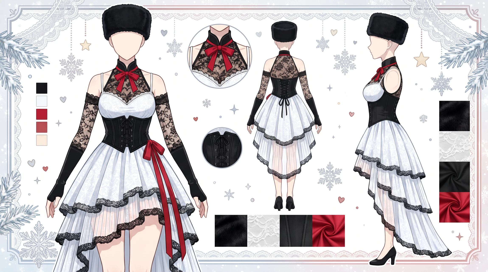
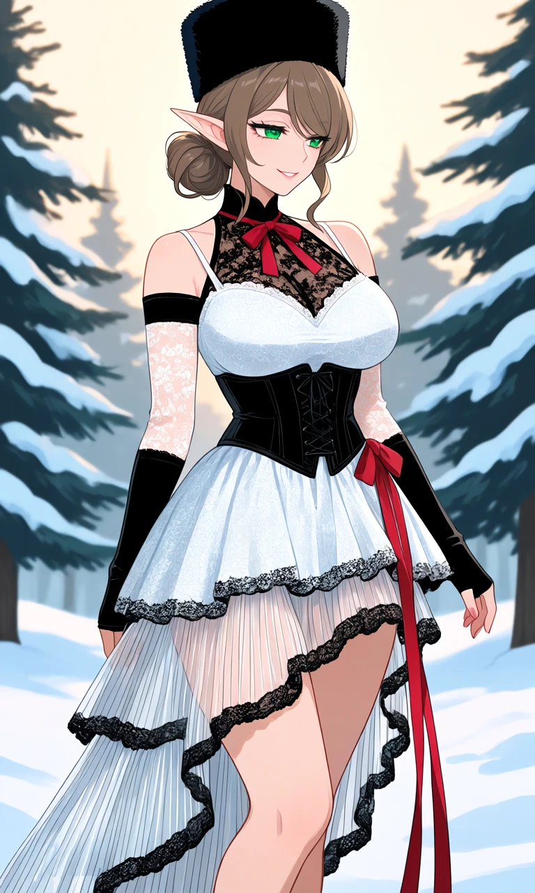
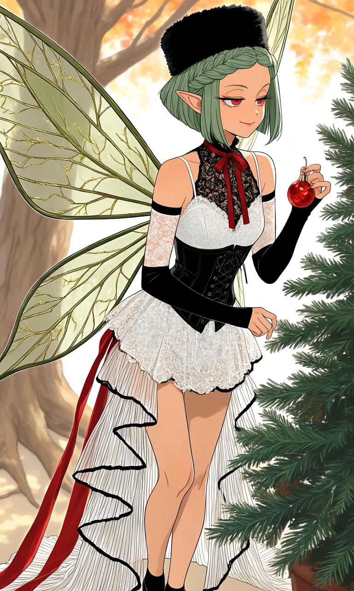

Frost & Garnet

Outfit Prompt
A shimmering white lace dress with thin shoulder straps and a fitted black underbust corset with front lacing. A sheer black floral lace panel rises to a high neckline, accented by a red ribbon bow. Sheer white long sleeves patterned with black floral lace sit off the shoulders beneath black bands, paired with long black fingerless arm warmers. The asymmetrical skirt combines a short white lace layer with cascading pleated sheer white tiers, each edged in black trim, extending to the ankles. Long red ribbons fall from one hip. A tall black fur hat and black heels complete the outfit.
Outfit Examples



